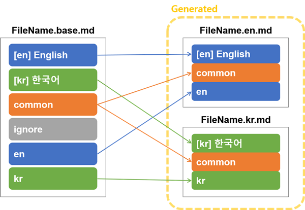

Multilingual Markdown Generator
This package provides a command-line interface to manage multilingual contents and generate i18n markdown from a single base file.


🚀 version 1.0 🌏 English | Français | 한국어 | 日本語
Available in Bash, Zsh, and Windows PowerShell.
Table of Contents ⚡
Overview 🔎
How It Works

Features
- Auto suffix to file name
- IETF language tags are also available.
- Remove suffix option for one main language
- UTF-8 encoding. So this would support almost all languages. :) 🍷
- Auto table of contents
- Table of contents level options
- Table of contents emoji on-off options
Install
pip3 install mmg --user
Now when you open a new terminal you can use the new command mmg.
$ mmg --help
mmg [OPTIONS] [FILENAMES]...
Options:
--version Show the current version.
-r, --recursive This recursive option searches all subfolders
based on current directory and converts all base
files.
-y, --yes Confirm the action without prompting
-c, --check / -s, --skip Check the number of language tags of each file
(defualt: --check)
-v, --verbose For example, -v:1, -vv:2, -vvv:3 [x>=0]
--help Show this message and exit.
How to Fix a "Command Not Found" Error
Ubuntu Bash/Zsh
- Cause: This error occurs if the variable
PATHdoes not contain the path$HOME/.local/binwhere themmgcommand is installed. - Solution: Open
~/.bashrcor~/.zshrcfile and add$HOME/.local/bintoPATH.export PATH="$HOME/.local/bin:$PATH"
Windows PowerShell
You can solve the problem by creating the PS modules in the order described below.
- You can check the PSModule paths by using the
$env:PSModulePathcommand in PowerShell. Paste the PSmmg folder of this repository into one of the PSModule paths. For example,C:\Program Files\WindowsPowerShell\Modules\PSmmg\PSmmg.psm1should exist. - Run PowerShell in administrator mode and change the execution policy.
Set-ExecutionPolicy RemoteSigned - Now restart PowerShell and you can use the
mmgcommand.
OS Agnostic Alternative
python -m mmgcli [options]
Update
pip3 install mmg --upgrade --user
Uninstall
pip3 uninstall mmg
How to Use
(0) Make a Base Markdown File
Make {something}.base.md files. See README.base.md and example.base.md for examples, and Command Tags for rules.
(Note) A wrong format of base-file will break generated style.
(1) File Designation
Enter the *.base.md files that you want to create in multiple languages as arguments to the mmg command.
mmg FileName.base.md
Multiple arguments are separated by spaces.
mmg Foo.base.md Bar.base.md Baz.base.md
(2) Recursive Option
If you want to convert all base files in the current directory and subdirectories, use the --recursive or -r option.
The recursive option searches all subfolders based on where the command is entered.
You cannot specify a folder as an argument yet.
mmg --recursive
(3) Base File Validation
When your file may have a problem. (Normal is shown in green and abnormal in red.)
- Verbosity 0
text $ mmg -r ---------------------- ✅ .\README.base.md ❌ .\example\example.base.md ---------------------- => 2 base markdowns were found. Your verbosity is 0. Try the `--verbose` option for more details. Do you want to convert these files? [y/N] - Verbosity 1 (
--verbose)text $ mmg -r -v ---------------------- ✅ .\README.base.md Tag count: {'en': 37, 'fr': 37, 'kr': 37} ❌ .\example\example.base.md 4 language(s) not translated. Tag count: {'en-US': 4, 'fr-FR': 4, 'ko-KR': 5, 'ja-JP': 4, '<Unknown>': 1} ---------------------- => 2 base markdowns were found. Do you want to convert these files? [y/N] - Verbosity 2
text $ mmg -r -vv ---------------------- ✅ .\README.base.md Tag count: {'en': 37, 'fr': 37, 'kr': 37} ❌ .\example\example.base.md 4 language(s) not translated. Tag count: {'en-US': 4, 'fr-FR': 4, 'ko-KR': 5, 'ja-JP': 4, '<Unknown>': 1} Line 28: This language reappeared before all languages appeared once. Line 36: A common area appeared before all languages come out. Line 57: Unknown suffix detected. Line 59: This language reappeared before all languages appeared once. ---------------------- => 2 base markdowns were found. Do you want to convert these files? [y/N]
When your files are ok.
$ mmg -r --verbose
----------------------
✅ .\README.base.md
Tag count: {'en': 37, 'fr': 37, 'kr': 37}
✅ .\example\example.base.md
Tag count: {'en-US': 4, 'fr-FR': 4, 'ko-KR': 4, 'ja-JP': 4}i
----------------------
=> 2 base markdowns were found.
Your verbosity is 0. Try the `--verbose` option for more details.
Do you want to convert these files? [y/N]
(4) More explanations
- You can find the
{something}.{suffix}.mdfiles in the same directory. For example:- By default:
{something}.en.md,{something}.kr.md,{something}.es.md, ... - When no-suffix option on
en:{something}.md,{something}.kr.md,{something}.es.md, ...
- By default:
- Since this generator overwrites the auto-generated files each time, you do not have to delete them every time when you modify the
{something}.base.md. Just run step 2 again.
Command Tags
Headers
Headers must be declared before the body begins.
-
Suffix Declaration
Declare the language you want to use. The following example declares
enandkrand others as keywords. These keywords are used as suffixes.markdown <!-- multilingual suffix: en, kr, fr, es, jp, cn --> -
Hidden Suffix (Optional)
The
no suffixoption can prevent the suffix from being appended when creating the file. In other words, settingno suffixtoenwill generateFileName.mdinstead ofFileName.en.md. This is useful because the mainREADMEin GitHub is not recognized when it has a suffix.markdown <!-- no suffix: en -->
Badges


 ...
...
[](https://github.com/ryul1206/multilingual-markdown)
Main Text
Everything that the parser reads after the tag below is recognized as the main text. (So you have to write the header before main).
-
Keywords
-
Language Classification
The tags that distinguish languages are written in the form
<!-- [keyword] -->. If one keyword is recognized, it will be recognized as that keyword until another keyword is seen.markdown <!-- [en] --> <!-- [ko] --> <!-- [fr] --> <!-- [es] --> <!-- [ja] --> <!-- [cn] --> ... -
Common Section
You can use the 'common' keyword to create a common entry for all files to be generated.
markdown <!-- [common] --> -
Ignored Section
Sometimes you do not want to include some items such as comments or TODOs in the files to be generated. If so, use the
ignorekeyword.markdown <!-- [ignore] -->
-
-
Table of contents
The tags below are automatically replaced to the table of contents by the generator. The level of the table of contents can be determined through the
leveloption. The highest-level of title(# title) is level 1 because it is<h1>in HTML.(Note) If you skip the title level of the markdown marked with
#, an error will occur. In other words, the subtitle of##must be###.markdown <!-- [[ multilingual toc: level=2~3 ]] -->leveloption- There are four ways to mark
level. You can change the numbers below.level=2: Make the 2nd level to table of contents.level=2~: Make the 2nd ~ 9th level to table of contents.level=~4: Make the 1st ~ 4th level to table of contents.level=2~4: Make the 2nd ~ 4th level to table of contents.
- You can write the
table of contentstags multiple times in one document, and also put differentleveloptions each time. - CAUTION💥: If you omit this
level, the parser will not recognize it. - CAUTION💥: The
table of contentstag automatically changes the current keyword tocommon. So this tag is also implicitly incommon.
- There are four ways to mark
-
no-emojioption- You may want to subtract emoji from the table of contents while inserting emoji in a section title.😱 If you are in this situation, apply the
no-emojioption as shown below.😎
markdown <!-- [[ multilingual toc: level=2~3 no-emoji ]] --> - You may want to subtract emoji from the table of contents while inserting emoji in a section title.😱 If you are in this situation, apply the
Contribution
I would appreciate anything you send. (e.g. translations, simple improvements, bug reports, and so on.)
How to build locally for development
- Linux and MacOS
- Required packages:
pip3 install -r requirements_dev.txt --user - Install:
python3 setup.py install --user --record temp.txt - Usage:
mmg [OPTIONS] [FILENAMES]... - Uninstall:
xargs rm -rf < temp.txt - Windows
- Required packages:
pip3 install -r .\requirements_dev.txt --user - Install:
python3 setup.py install --user --record temp.txt - Usage:
python3 -m mmgcli [OPTIONS] [FILENAMES]... - Uninstall (PowerShell):
python3 -m pip uninstall mmg
Changelog
Contributors
The contributor list is available in English only.
- @bkg2018 (Francis Piérot): Added french translation to README and example. PR #1
- @mathben (Mathieu Benoit): Update README pip installation with requirements.txt PR #2